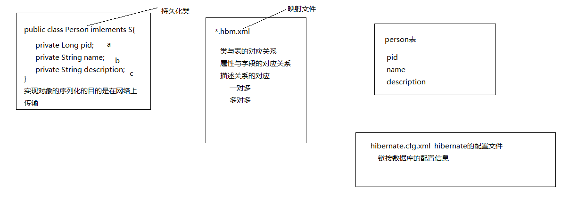
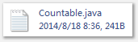

hibernate的HQL中的select的是类名，而不是表，这个就是面向对象的编程，因此，不能弄混，ok。
整体概述：
- 环境配置。其实，就是准备jar包，
- 写配置文件，一个是bean和数据库对应的配置文件，bean 的配置和java代码在一个位置中，
- 一个是hibernate初始化的配置文件，比如连接数据库的配置，密码，什么的。
整个hibernate的配置文件在src根目录下。



名称：
bean名字.hbm.xml（位置，与表述的domain位于同一个包的下面。）

关于数据库的配置文件：
配置文件的名字：hibernate.cfg.xml（位于根目录下，也就是src下，但是，为了能够将代码与配置文件分离，因此，应该在new一个新的source file 文件，他和src出于相同的级别，这样弄，更好。）
<?xml version= "1.0" encoding ="UTF-8"?>
<!DOCTYPE hibernate-configuration PUBLIC
"-//Hibernate/Hibernate Configuration DTD 3.0//EN"
"http://www.hibernate.org/dtd/hibernate-configuration-3.0.dtd" >
<hibernate-configuration>
<session-acftory >
<property name="connection.driver_class" >com.mysql.jdbc.Driver </property>
<property name="connection.url" >jdbc:mysql:// localhost:3306/day22</property >
<property name="connection.username" >root </property>
<property name="connection.password" >sorry </property>
<property name="connection.pool_size" >5 </property>
<property name="dialect" >org.hibernate.dialect.MySQLDialect </property>
<property name="current_session_context_class" >thread </property>
<property name="cache.provider_class" >org.hibernate.cache.NoCacheProvider </property>
<property name= "show_sql">true</property >
<property name="hibernate.format_sql" >true </property>
<property name= "hbm2ddl.auto">update</property >
<mapping resource="com/itheima/domain/Person.hbm.xml" />
</session-factory >
</hibernate-configuration>
整个hibernate配置文件详解：
包括三部分：
与数据库的密码等有关的部分：
<!-- 链接数据库的用户名 -->
<property name="connection.username"> root</ property>
<!-- 链接数据库的密码 -->
<property name="connection.password"> 123</ property>
<!-- 链接数据库的驱动 -->
<property name="connection.driver_class">
com.mysql.jdbc.Driver
</property >
<!-- 链接数据库的url -->
<property name="connection.url">
jdbc:mysql:// localhost:3306/day804
</property >
与特定操作，功能有关的配置：
<!--
方言
告诉 hibernate用什么样的数据库
-->
<property name="dialect">
org.hibernate.dialect.MySQLDialect
</property >
<!--
validate 加载 hibernate时，验证数据库的结构 默认值
update 加载 hibernate时，检查数据库，如果表不存在，则创建，如果存在，则更新
create 每次加载 hiberante,都会创建表
create-drop 每次加载 hiberante,创建，卸载 hiberante时，销毁
-->
<property name="hbm2ddl.auto"> update</ property>
<property name="show_sql"> true</ property>
<property name="format_sql"> true</ property>
与bean的映射文件有关的配置：
< mapping resource ="com/itheima10/hibernate/domain/Person.hbm.xml" />
注意，没有源最开始的时候，没有斜线。
上述两个文件的位置：

一个完整的环境，含有工具的工程就可以使用了。
工具包少一个文件，
接下来，就是获得hibernate的连接：
public class HibernateUtil {
private static final SessionFactory sessionFactory = buildSessionFactory();
private static SessionFactory buildSessionFactory() {
try {
// Create the SessionFactory from hibernate.cfg.xml
return new Configuration().configure().buildSessionFactory();
}
catch (Throwable ex) {
// Make sure you log the exception, as it might be swallowed
System. err.println( "Initial SessionFactory creation failed." + ex);
throw new ExceptionInInitializerError(ex);
}
}
public static SessionFactory getSessionFactory() {
return sessionFactory;
}
public static Session getSession(){
return sessionFactory.openSession();
}
}
通过上述方法，就能够获得读取了配置文件的一个连接。
详解：
Hibernate是处于开发中的持久层框架，他是一个ORM映射工具（Object/Relation Mapping，对象-关系映射，就是通过将Java对象映射到数据库表，通过操作Java对象，就可以完成对数据表的操作）。是轻量级JavaEE应用的持久层解决方案。
关键字：持久层，ORM映射（javabean<-----> 关系数据库），轻量级
不管什么框架，都是安装配置文件为主，在搭载好框架所需要的开发环境后，就是开始写配置文件，使用xml的配置文件。进行配置。
需要的jar包：

我现在知道的是，要写两个配置文件


第一个是javabean和数据库之间的对应关系的xml配置，
内容如下：

配置好bean，和数据库对应的关系，其中，在主键的定义中，native的属性就是告诉数据库，如果可以自动增加，就自动增加
接下来，编写配置文件信息：

 （查询的时候应该不需要事务支持，要不要去数据库查询，有缓冲问题）
（查询的时候应该不需要事务支持，要不要去数据库查询，有缓冲问题）DML语句使用事务，DQL语句不使用事务
public void add(){
Person p = new Person("wh" ,new Date());
Session s = HibernateUtil.getSession();
//开始事务
Transaction tx = s.beginTransaction();
s.save(p);
tx.commit();
s.close();
}
public void findOne(){
Session s = HibernateUtil.getSession();
Person p = (Person) s.get(Person. class, 1L);
System. out.println(p);
s.close();
}
@Test
public void update(){
Session s = HibernateUtil.getSession();
Transaction tx = s.beginTransaction();
Person p = (Person) s.get(Person. class, 1L);
p.setName( "wh2");
s.update(p);
tx.commit();
s.close();
}
public void delete(){
Session s = HibernateUtil.getSession();
Transaction tx = s.beginTransaction();
Person p = (Person) s.get(Person. class, 1L);
s.delete(p);
tx.commit();
s.close();
}

根据主键查询单个对象 GET

这个get方法，要详细解释一下：
他需要两个参数，第一个为一个字节码文件，第二个参数为主键，get方法，就是根据主键进行查找的，Integer，实现了了这个接口，就可以用int 类型的数据，自动转型为Integer，然后被serializable接口引用，及面向接口编程。
他返回的是第一个字节码对应的类的一个实例，也就是说Persion.class 作为参数，就能够获得该类的实例。
这个方法就这么用，传递一个字节码，一个实现了可序列化接口的值，作为主键，就能够获得该字节码的对象。框架，就是这么牛。